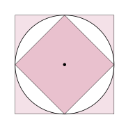
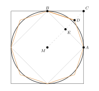

Aufgabe 7.3
Betrachten Sie für $r=0.5$. Welche Abschätzung für den Kreisumfang $U$ (und damit auch $\pi$) ergibt sich für die erste Näherung? Welche Näherung für $\pi$ ergibt sich bei der zweiten Näherung?
- Das einbeschriebene Quadrat liefert eine untere Schranke
- Das umbeschriebene Quadrat liefert eine obere Schranke
- Nutzen Sie den Satz des Pythagoras für die Seitenlängen
- Bei $r = 0.5$ ist $U = \pi$
Erste Näherung: die beiden Quadrate

Das äussere Quadrat hat die Seite $d = 1$, also den Umfang $4$. Das innere hat die Diagonale $1$, also die Seite $\frac{1}{\sqrt{2}}$ und den Umfang $\frac{4}{\sqrt{2}} = 2\sqrt{2}$. Der Kreis liegt dazwischen: \[2\sqrt{2} \approx 2.83 \;<\; \pi \;<\; 4 .\]
Zweite Näherung: das Achteck mit $D$

$E$ ist die Mitte von $AB$, $D$ die Mitte von $EC$. Mit $M$ im Ursprung und $r = \frac{1}{2}$ ist $A = (\frac12, 0)$, $B = (0, \frac12)$, $C = (\frac12, \frac12)$, also $E = (\frac14, \frac14)$ und $D = (\frac38, \frac38)$. Die Achteckseite $BD$ ist nach Pythagoras \[\overline{BD}^{\,2} = \left(\tfrac38\right)^2 + \left(\tfrac18\right)^2 = \tfrac{10}{64} = \tfrac{5}{32}, \qquad \overline{BD} = \sqrt{\tfrac{5}{32}} .\] Acht solche Seiten ergeben \[8\cdot\sqrt{\tfrac{5}{32}} = \sqrt{10} \approx 3.162,\] und das ist die Näherung $\pi \approx \sqrt{10}$ aus dem Kapitel.
Im Video: Etappe 2 · Empirische und qualitative Methoden bei 5:05